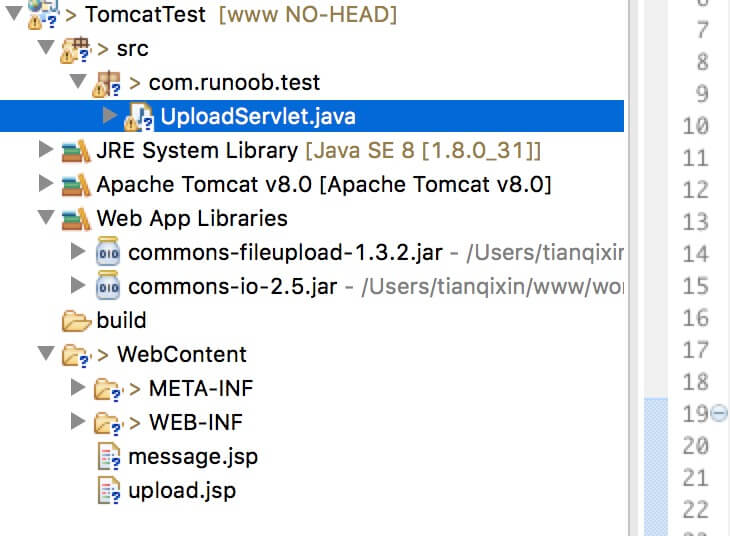
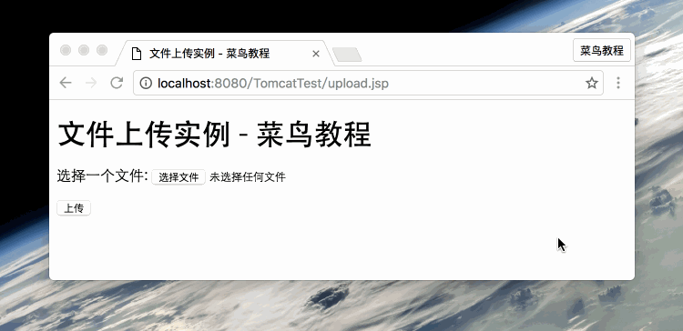
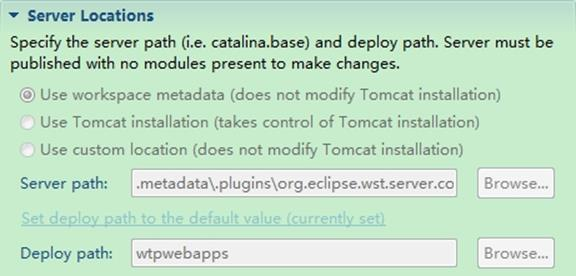
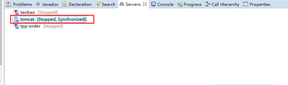
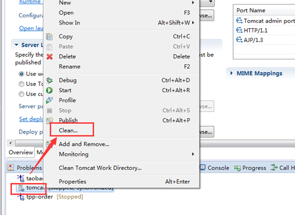
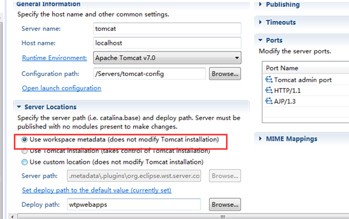

Servlet Carga de archivos
Servlet se puede usar junto con la etiqueta HTML form para permitir a los usuarios cargar archivos al servidor. Los archivos cargados pueden ser archivos de texto, archivos de imagen o cualquier documento.
Los archivos utilizados en este artículo son:
- upload.jsp : formulario de carga de archivos.
- message.jsp : página de redireccionamiento después de una carga exitosa.
- UploadServlet.java : Servlet de procesamiento de carga.
- Archivos jar que deben importarse: commons-fileupload-1.3.2、commons-io-2.5.jar.
El diagrama de estructura es el siguiente:

Nota:Servlet3.0 ya tiene integrada la función de carga de archivos, los desarrolladores ya no necesitan importar el componente Commons FileUpload al proyecto.
A continuación lo explicamos en detalle.
Crear un formulario de carga de archivos
El siguiente código HTML crea un formulario de carga de archivos. Debe tener en cuenta los siguientes puntos:
- Formulariomethodel atributo debe establecerse enPOSTel método, no se puede usar el método GET.
- Formularioenctypeel atributo debe establecerse enmultipart/form-data.
- Formularioactionel atributo debe establecerse en el archivo Servlet que procesa la carga de archivos en el servidor backend. El siguiente ejemplo utilizaUploadServletServlet para cargar archivos.
- Para cargar un solo archivo, debe usar una sola etiqueta <input .../> con el atributo type="file". Para permitir la carga de varios archivos, incluya varias etiquetas input con diferentes valores del atributo name. Las etiquetas de entrada tienen diferentes valores del atributo name. El navegador asociará un botón de examinar con cada etiqueta input.
El código del archivo upload.jsp es el siguiente:
<%@ page language="java" contentType="text/html; charset=UTF-8"
pageEncoding="UTF-8"%>
<!DOCTYPE html PUBLIC "-//W3C//DTD HTML 4.01 Transitional//EN"
"http://www.w3.org/TR/html4/loose.dtd">
<html>
<head>
<meta http-equiv="Content-Type" content="text/html; charset=UTF-8">
<title>文件上传实例 - 菜鸟教程</title>
</head>
<body>
<h1>文件上传实例 - 菜鸟教程</h1>
<form method="post" action="../TomcatTest/UploadServlet" enctype="multipart/form-data">
选择一个文件:
<input type="file" name="uploadFile" />
<br/><br/>
<input type="submit" value="上传" />
</form>
</body>
</html>
Escribir el Servlet de backend
El siguiente es el código fuente de UploadServlet, que se utiliza para procesar la carga de archivos. Antes de esto, asegurémonos de que los paquetes de dependencia ya se hayan introducido en el directorio WEB-INF/lib del proyecto:
- El siguiente ejemplo depende de FileUpload, así que asegúrese de tener la última versión en su classpathcommons-fileupload.x.x.jardel archivo. Se puede descargar desdehttp://commons.apache.org/proper/commons-fileupload/descargar.
- FileUpload depende de Commons IO, así que asegúrese de tener la última versión en su classpathcommons-io-x.x.jardel archivo. Se puede descargar desdehttp://commons.apache.org/proper/commons-io/descargar.
Puede descargar directamente los dos paquetes de dependencia proporcionados por este sitio:
El código fuente de UploadServlet es el siguiente:
package com.runoob.test;
import java.io.File;
import java.io.IOException;
import java.io.PrintWriter;
import java.util.List;
import javax.servlet.ServletException;
import javax.servlet.annotation.WebServlet;
import javax.servlet.http.HttpServlet;
import javax.servlet.http.HttpServletRequest;
import javax.servlet.http.HttpServletResponse;
import org.apache.commons.fileupload.FileItem;
import org.apache.commons.fileupload.disk.DiskFileItemFactory;
import org.apache.commons.fileupload.servlet.ServletFileUpload;
/**
* Servlet implementation class UploadServlet
*/
@WebServlet("/UploadServlet")
public class UploadServlet extends HttpServlet {
private static final long serialVersionUID = 1L;
// 上传文件存储目录
private static final String UPLOAD_DIRECTORY = "upload";
// 上传配置
private static final int MEMORY_THRESHOLD = 1024 * 1024 * 3; // 3MB
private static final int MAX_FILE_SIZE = 1024 * 1024 * 40; // 40MB
private static final int MAX_REQUEST_SIZE = 1024 * 1024 * 50; // 50MB
/**
* 上传数据及保存文件
*/
protected void doPost(HttpServletRequest request,
HttpServletResponse response) throws ServletException, IOException {
// 检测是否为多媒体上传
if (!ServletFileUpload.isMultipartContent(request)) {
// 如果不是则停止
PrintWriter writer = response.getWriter();
writer.println("Error: 表单必须包含 enctype=multipart/form-data");
writer.flush();
return;
}
// 配置上传参数
DiskFileItemFactory factory = new DiskFileItemFactory();
// 设置内存临界值 - 超过后将产生临时文件并存储于临时目录中
factory.setSizeThreshold(MEMORY_THRESHOLD);
// 设置临时存储目录
factory.setRepository(new File(System.getProperty("java.io.tmpdir")));
ServletFileUpload upload = new ServletFileUpload(factory);
// 设置最大文件上传值
upload.setFileSizeMax(MAX_FILE_SIZE);
// 设置最大请求值 (包含文件和表单数据)
upload.setSizeMax(MAX_REQUEST_SIZE);
// 中文处理
upload.setHeaderEncoding("UTF-8");
// 构造临时路径来存储上传的文件
// 这个路径相对当前应用的目录
String uploadPath = request.getServletContext().getRealPath("./") + File.separator + UPLOAD_DIRECTORY;
// 如果目录不存在则创建
File uploadDir = new File(uploadPath);
if (!uploadDir.exists()) {
uploadDir.mkdir();
}
try {
// 解析请求的内容提取文件数据
@SuppressWarnings("unchecked")
List<FileItem> formItems = upload.parseRequest(request);
if (formItems != null && formItems.size() > 0) {
// 迭代表单数据
for (FileItem item : formItems) {
// 处理不在表单中的字段
if (!item.isFormField()) {
String fileName = new File(item.getName()).getName();
String filePath = uploadPath + File.separator + fileName;
File storeFile = new File(filePath);
// 在控制台输出文件的上传路径
System.out.println(filePath);
// 保存文件到硬盘
item.write(storeFile);
request.setAttribute("message",
"文件上传成功!");
}
}
}
} catch (Exception ex) {
request.setAttribute("message",
"错误信息: " + ex.getMessage());
}
// 跳转到 message.jsp
request.getServletContext().getRequestDispatcher("/message.jsp").forward(
request, response);
}
}
El código del archivo message.jsp es el siguiente:
<%@ page language="java" contentType="text/html; charset=UTF-8"
pageEncoding="UTF-8"%>
<!DOCTYPE html PUBLIC "-//W3C//DTD HTML 4.01 Transitional//EN"
"http://www.w3.org/TR/html4/loose.dtd">
<html>
<head>
<meta http-equiv="Content-Type" content="text/html; charset=UTF-8">
<title>文件上传结果</title>
</head>
<body>
<center>
<h2>${message}</h2>
</center>
</body>
</html>
Compilar y ejecutar el Servlet
Compile el Servlet UploadServlet anterior y cree las entradas necesarias en el archivo web.xml, como se muestra a continuación:
<?xml version="1.0" encoding="UTF-8"?>
<web-app xmlns:xsi="http://www.w3.org/2001/XMLSchema-instance"
xmlns="http://java.sun.com/xml/ns/javaee"
xmlns:web="http://java.sun.com/xml/ns/javaee/web-app_2_5.xsd"
xsi:schemaLocation="http://java.sun.com/xml/ns/javaee
http://java.sun.com/xml/ns/javaee/web-app_2_5.xsd"
id="WebApp_ID" version="2.5">
<servlet>
<display-name>UploadServlet</display-name>
<servlet-name>UploadServlet</servlet-name>
<servlet-class>com.runoob.test.UploadServlet</servlet-class>
</servlet>
<servlet-mapping>
<servlet-name>UploadServlet</servlet-name>
<url-pattern>/TomcatTest/UploadServlet</url-pattern>
</servlet-mapping>
</web-app>
Ahora intente usar el formulario HTML que creó anteriormente para cargar archivos. Cuando acceda en el navegador a: http://localhost:8080/TomcatTest/upload.jsp , la demostración es la siguiente:

Otras extensiones
tianqixin
429***967@qq.com
Dirección de referencia
Para archivos generales, si se usa directamente la etiqueta a, como se muestra en el siguiente código. Dado que el navegador puede analizar archivos jpg y txt, no se descargarán directamente sino que se abrirán en otra página web:
Si desea lograr el propósito de descarga directa, puede hacerlo a través de Servlet. Hice una página HTML simple.
Registré un servlet para download, la descripción en xml es la siguiente:
<servlet> <servlet-name>DownloadServlet</servlet-name> <servlet-class>com.response.download.DownloadServlet</servlet-class> </servlet> <servlet-mapping> <servlet-name>DownloadServlet</servlet-name> <url-pattern>/download</url-pattern> </servlet-mapping>Dado que mi método de solicitud es GET, solo necesito sobrescribir el método doGet en la clase DownloadServlet. La implementación del código es la siguiente:
public void doGet(HttpServletRequest request, HttpServletResponse response) throws ServletException, IOException { //获取文件名 String filename=request.getParameter("name"); //防止读取name名乱码 filename=new String(filename.getBytes("iso-8859-1"),"utf-8"); //在控制台打印文件名 System.out.println("文件名："+filename); //设置文件MIME类型 response.setContentType(getServletContext().getMimeType(filename)); //设置Content-Disposition response.setHeader("Content-Disposition", "attachment;filename="+filename); //获取要下载的文件绝对路径，我的文件都放到WebRoot/download目录下 ServletContext context=this.getServletContext(); String fullFileName=context.getRealPath("/download/"+filename); //输入流为项目文件，输出流指向浏览器 InputStream is=new FileInputStream(fullFileName); ServletOutputStream os =response.getOutputStream(); /* * 设置缓冲区 * is.read(b)当文件读完时返回-1 */ int len=-1; byte[] b=new byte[1024]; while((len=is.read(b))!=-1){ os.write(b,0,len); } //关闭流 is.close(); os.close(); }tianqixin
429***967@qq.com
Dirección de referencia
Da Jiang
158***86046@126.com
Dirección de referencia
Resolver el problema de que la opción server location del servidor Tomcat en Eclipse no se puede modificar
Descripción del problema
Al editar el servidor Tomcat, server locations no se puede editar, como se muestra a continuación:

Solución

En la barra de menús de Eclipse, seleccione window — show view — server para ver el panel de servicios. En el panel de servicios puede ver el Tomcat configurado y los proyectos bajo Tomcat.
Primero elimine todos los proyectos bajo Tomcat, luego haga clic derecho y seleccione clean. Vuelva a hacer doble clic en Tomcat para entrar en la interfaz de configuración; en este momento puede ver que las opciones bajo Service Locations ya están en estado editable.


La opción predeterminada es: Use workspace metadata(dose not modify Tomcat installation)，
Si cambia la opción a: Use Tomcat installation(takes control of Tomcat installation)
Entonces el servidor Tomcat iniciado en Eclipse también podrá acceder a la página de inicio de Tomcat (por ejemplo, a través de http://localhost:8080). De lo contrario, de forma predeterminada, el servidor Tomcat iniciado en Eclipse no puede acceder a la página de inicio de Tomcat; solo el Tomcat iniciado en DOS puede acceder a la página de inicio de Tomcat.
Da Jiang
158***86046@126.com
Dirección de referencia
====*********999999
pro***ndhlf@163.com
En Servlet3.0+, el paquete fileupload importado ya no es el import original. Realice las siguientes modificaciones:
====*********999999
pro***ndhlf@163.com